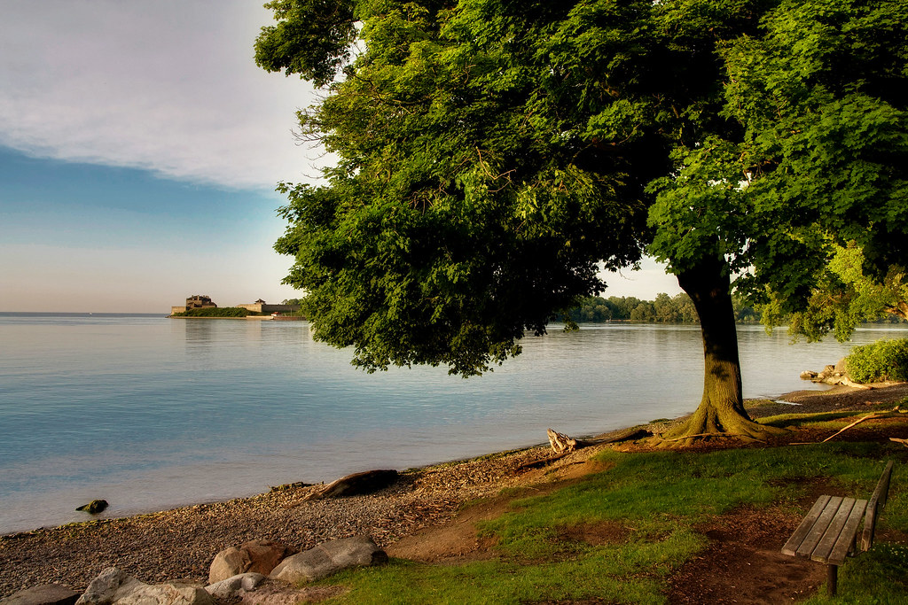
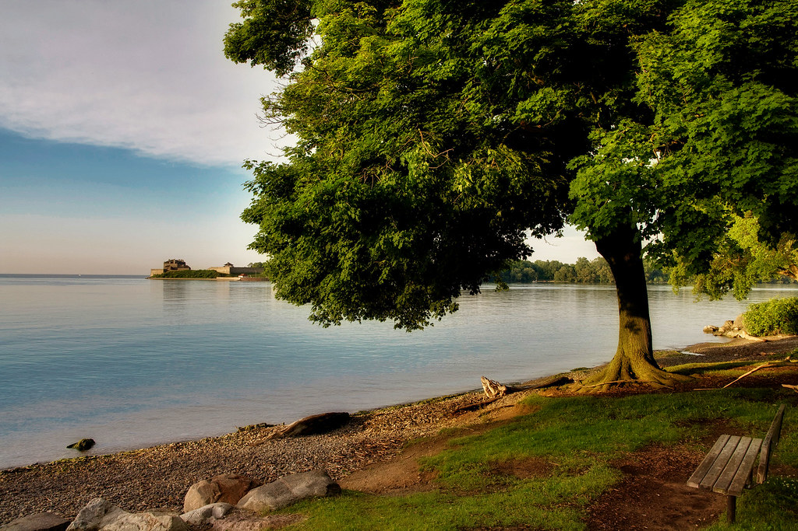

Niagara Attractions
The Niagara Region is a fun place with many activities and attractions
Activities Near Brock
Other Activities
Local Shopping Malls
- Pen Center
- Fairview Mall
- Outlet Collection at Niagara
Unique Restaurants
- Thistle Bookshop and Cafe
- Beechwood Doughnuts
- Mahtay Cafe
Photos of the Region
These pictures showcase the Region's landscape
 

Click to Return to Top of Page